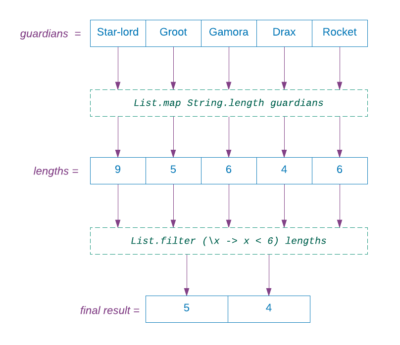
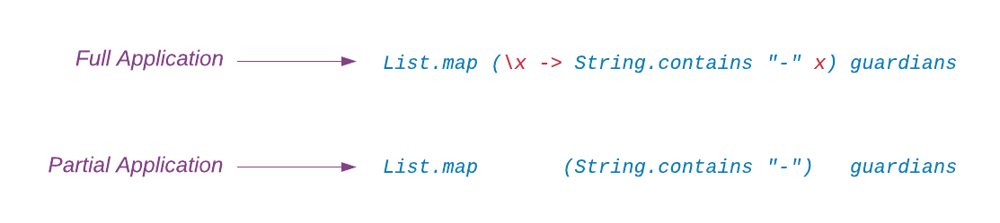
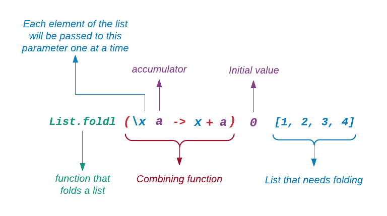
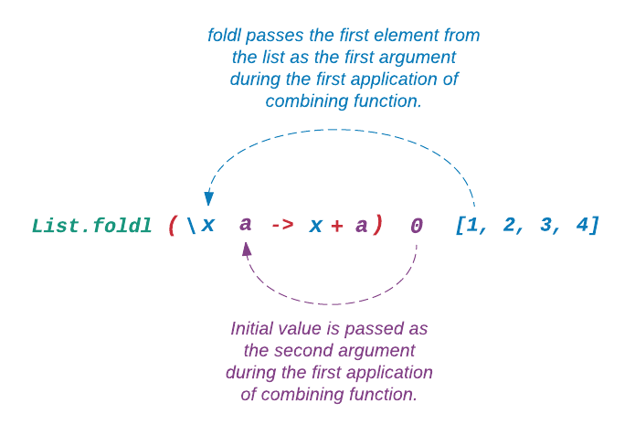
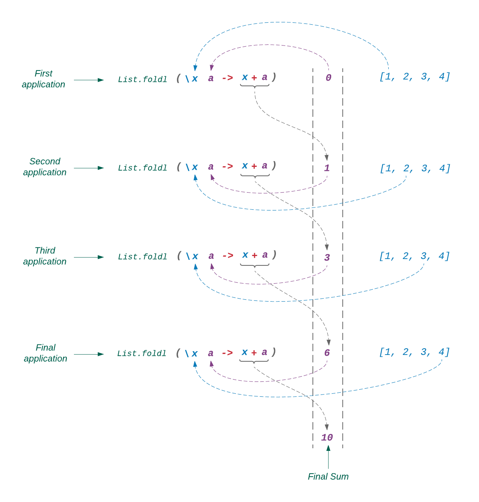
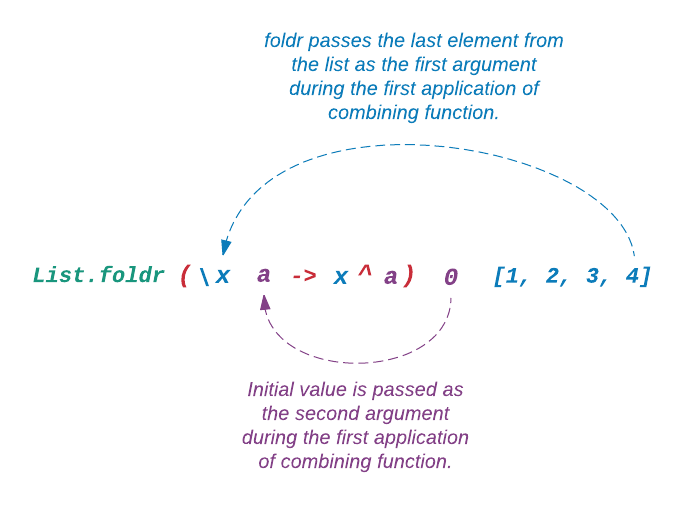
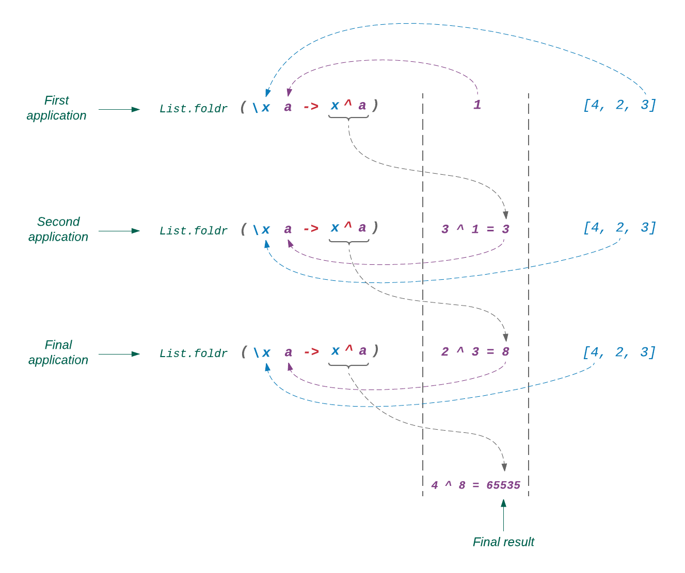
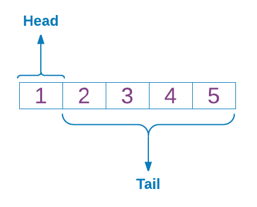
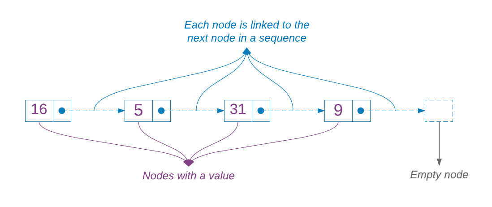
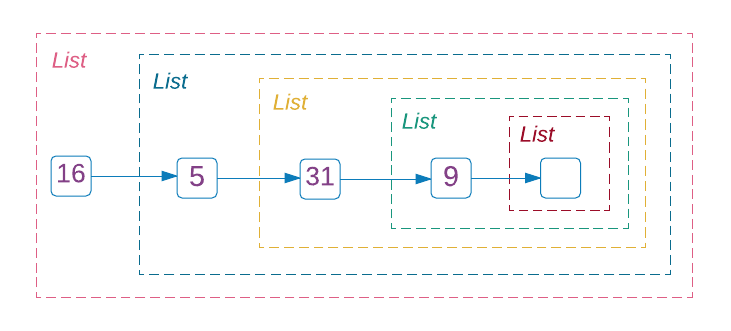

Doposud jsem se setkávali s ukládáním jediné hodnoty do datové struktury. Pro uložení vícerých hodnot můžeme použít jednu z následujících kolekcí, které Elm poskytuje: List, Array, Tuple nebo Record. Tato sekce pojednává o seznamech (lists). Zbytek bude vysvětlen v následujících sekcích.
Vytvoření seznamu
Seznam (list) v Elmu je datová struktura pro ukládání vícerých hodnot stejného druhu. Seznam je jednou z nejpoužívanější datových struktur. Indikuje se hranatými závorkami. Každý element seznamu musí být oddělen čárkou:
> [ 1, 2, 3 ]
[1,2,3] : List number
> [ 'a', 'b', 'c' ]
['a','b','c'] : List Char
> [ "Tobias", "Gob", "George Michael" ]
["Tobias","Gob","George Michael"] : List StringStylistický průvodce Elmu doporučuje vkládat mezeru za [ a před ]. Repl však toto doporučení nerespektuje.
Co se stane, když do seznamu vložíme hodnoty různého druhu?
> [ 1, 'a' ]
-------------- TYPE MISMATCH --------------------------
The 1st and 2nd elements are different types of values.
7| [1, 'a']
^^^
The 1st element has this type:
number
But the 2nd is:
CharElm to nemá rád. Můžeme také vytvořit seznam celých čísel zadáním intervalu:
> List.range 1 5
[1,2,3,4,5]Modul Listje stejně jako modul String načten v replu automaticky. Proto je nemusíme před použitím příslušných funkcí importovat.
Interval (range) se vytváří určením prvního a posledního (celého) čísla sekvence. Je to příjemná zkratka, která nás zbavuje nutnosti zadávat dlouhé řady čísel.
> List.range 'a' 'z'
--------------------- TYPE MISMATCH -----------------------
The 1st argument to function `range` is causing a mismatch.
3| List.range 'a' 'z'
^^^
Function `range` is expecting the 1st argument to be:
Int
But it is:
CharStejně jako moduly String a Regex, je i modul List vybaven Platformou Elm. Ta poskytuje množství funkcí pro práci se seznamy. Některé si projděmež.
Ověření příslušnosti
Funkce member určuje, zda je položka přítomna v daném seznamu.
> List.member "Jayne" [ "Kaylee", "Jayne", "Malcolm" ]
True
> List.member "Inara" [ "Kaylee", "Jayne", "Malcolm" ]
FalseOvěření délky
Funkce isEmpty zjistí, zda je seznam prázdný, zatímco funkce length vrátí počet elementů v seznamu.
> List.isEmpty []
True
> List.isEmpty [ "Dolores", "Teddy", "Elsie" ]
False
> List.length []
0
> List.length [ 1, 2, 3 ]
3
> List.length [ "Daenerys", "Tyrion", "Arya", "Khal Drogo" ]
4Obrácení seznamu
> List.reverse [ 1, 2, 3 ]
[3,2,1]
> List.reverse [ "Stark", "Tully", "Arryn" ]
["Arryn","Tully","Stark"]Funkce reverse vrací nový seznam, který obsahuje prvky původního seznamu v obráceném pořadí.
Spojování seznamů
Modul List poskytuje několik funkcí pro spojování seznamů do jednoho. Začněme s něčím, co již známe, s operátorem ++.
> [ 1, 2, 3 ] ++ [ 4, 5, 6 ]
[1,2,3,4,5,6]
> [ "Donna", "Eric" ] ++ [ "Fez", "Hyde", "Kelso" ]
["Donna","Eric","Fez","Hyde","Kelso"]Operátorem ++ můžeme spojit více seznamů dohromady.
> [ "Donna", "Eric" ] ++ [ "Fez", "Hyde", "Kelso" ] ++ [ "Jackie", "Kitty" ]
["Donna","Eric","Fez","Hyde","Kelso","Jackie","Kitty"]Stejně jako String.append, poskytuje i modul List funkci append, která umí spojit dva seznamy.
> List.append [ 1, 2 ] [ 3, 4 ]
[1,2,3,4]Spojování více než dvou seznamů funkcí append je poněkud únavné.
> List.append (List.append [ 1, 2 ] [ 3, 4 ]) [ 5, 6 ]
[1,2,3,4,5,6]Máme-li skupinu seznamů uvnitř jiného seznamu, můžeme k jejich spojení použít funkci concat :
> List.concat [ [ 1, 2 ], [ 3, 4 ], [ 5, 6 ] ]
[1,2,3,4,5,6]Konečně, můžeme přidat element na začátek seznamu operátorem :: (zvaným cons) .
> 1 :: []
[1]
> 1 :: [ 2, 3 ]
[1,2,3]Štěpení seznamu
Rozdělení seznamu
Na rozdíl od řetězce, nemůžeme u seznamu použít separátor k jeho dělení. Můžeme však rozdělit seznam v závislosti na nějakém kritériu. Elementy, vyhovující danému kritériu, jsou vloženy do jednoho seznamu, elementy nevyhovující jsou vloženy do druhého seznamu. Predikátová funkce je perfektní místo pro uložení našeho kriteria. Jenom pro připomenutí: predikát je funkce, která jako vstup přijímá hodnotu a vrací True nebo False. Zde je příklad, který rozděluje seznam s použitím anonymní funkce jako predikátu.
> List.partition (\x -> x < 4) [ 1, 2, 3, 4, 5, 6 ]
([1,2,3],[4,5,6])Zde je jiný příklad, který k dělení seznamu používá normální funkci.
> isEvil name = List.member name [ "Joffrey", "Ramsay", "Cersei" ]
<function>
> List.partition isEvil [ "Samwell", "Cersei", "Hodor", "Joffrey", "Meera", "Ramsay" ]
(["Cersei","Joffrey","Ramsay"],["Samwell","Hodor","Meera"])Elementy, které vyhovují predikátu, jsou umístěny do prvního seznamu, zbytek je vložen do druhého seznamu. Všímáte si, že funkce partition vrací entici (tuple), obsahující oddělené seznamy?
Tuple (entice) je kolektor hodnot stejného i různého druhu, např. (1, "Sobchak", ['t', 'd']). Entice jsou užitečný formát pro vícečlené návratové hodnoty funkcí. Budeme o nich pojednávat v sekci Tuple.
Může vám být divné, proč funkce partition nevrací seznam místo entice. Přece seznamy mohou obsahovat víceré hodnoty také. Je to proto, že elementy seznamu musí být stejného druhu, což u entic není nutné.
Přeskupení seznamu
Mějme seznam entic se dvěma elementy.
[ ( "Andy", True ), ( "Hadley", False ), ( "Red", True ) ]Jak jej rozdělíme do dvou seznamů? Použijeme funkci unzip.
> List.unzip [ ( "Andy", True ), ( "Hadley", False ), ( "Red", True ) ]
(["Andy","Hadley","Red"],[True,False,True])První seznam obsahuje první položku z každé entice původního seznamu a druhý seznam obsahuje druhé položky. Všimněte si, že funkce unzip rovněž vrací entici místo listu. S návratovou hodnotu funkce ve formátu entice se v Elmu setkáváme často.
Třídění seznamu
Stoupající pořadí
Níže je seznam sedmi nejvyšších skóre zápasů v historii NBA.
[ 316, 320, 312, 370, 337, 318, 314 ]Nejsou však nikterak uspořádány. Ve stoupajícím pořadí je uspořádáme funkcí sort.
> List.sort [ 316, 320, 312, 370, 337, 318, 314 ]
[312,314,316,318,320,337,370]Klesající pořadí
Funkce sort třídí seznam pouze ve stoupajícím pořadí. Chceme-li třídit seznam v klesajícím pořadí, nechá nás Elm proskakovat několika obručemi. Následující příklad si vyzkoušejte v souboru Playground.elm, protože je na zapisování do replu poněkud delší. Definujte funkci descending hned nad main. main.
descending a b =
case compare a b of
LT ->
GT
GT ->
LT
EQ ->
EQ
main =
...Nyní změňte main na:
main =
[ 316, 320, 312, 370, 337, 318, 314 ]
|> List.sortWith descending
|> toString
|> Html.textNemáte-li již spuštěný elm-reactor, spusťte jej z adresáře beginning-elm. Přejděte v prohlížeči na stránku http://localhost:8000/elm-examples/Playground.elm a měli byste vidět původní seznam v klesajícím pořadí:
[370,337,320,318,316,314,312]Projeděme si kódem krok za krokem. Nevím, jestli jste si všimli, že ve funkci main jsme použili funkci sortWith místo naší tvrdošíjné známé sort k procházení seznamem výsledků v klesajícím pořadí. Funkce sortWith přijímá dva argumenty: porovnávací funkci a seznam, který se má uspořádat.
Pro dvě dané hodnoty nám porovnávací funkce řekne, zda první hodnota je stejná jako, menší nebo větší než druhá hodnota. Pro tento účel nabízí Elm funkci compare. Je-li první hodnota menší než druhá, compare vrací LT. Je-li první hodnota větší než dvuhá, vrací GT. Jsou-li obě hodnoty stejné, vrací se EQ.
> compare 1 2
LT
> compare 2 1
GT
> compare 1 1
EQFunkce compare je definována v modulu Basics. Jak již bylo zmíněno dříve, Elm vkládá generické hodnoty a funkce, které mohou operovat s různými typy dat, jako jsou řetězce, seznamy, záznamy (records), etc - do modulu Basics module. Modul Basics, stejně jako modul String a List, jsou do replu načítány automaticky, proto je nemusíme explicitně importovat.
Funkcí compare můžeme také porovnávat řetězce.
> compare "Blade" "Dragonetti"
LT
> compare "Dragonetti" "Blade"
GT
> compare "Blade" "Blade"
EQŘetězce jsou porovnávány podle abecedního pořadí tak, jako jsou uspořádána slova ve slovnících. Například je "Thomas" považován za menší než "Thompson", protože je v abecedě písmeno 'a' před písmenem 'b'.
> compare "Thomas" "Thompson"
LTKdyž chceme třídit seznam v sestupném pořadí, potřebujeme aby se funkce compare chovala opačným způsobem. Jak to můžeme zařídit? Vložením šikovného přepínače:
descending a b =
case compare a b of
LT ->
GT
GT ->
LT
EQ ->
EQFunkce descending vrací GT, když compare vlastně míní LT a LT, když míní GT. Funkci descending poskytneme funkcisortWith a náš seznam se utřídí v sestupném pořadí.
List.sortWith descending [ 316, 320, 312, 370, 337, 318, 314 ]Tříděný seznam se předává funkci toString, která generuje řetězcovou prezentaci seznamu, kterou posléze funkce Html.text zobrazí v prohlížeči.
Funkce toString je rovněž definována v modulu Basics, protože to je generická funkce pro transformaci různých druhů hodnot na řetězec.
Funkci main jsme mohli napsat také takto:
main =
Html.text (toString (List.sortWith descending [ 316, 320, 312, 370, 337, 318, 314 ]))Naše původní funkce main, která používala operátor |>, byla poněkud přehlednější. Zde je zpět pro srovnání.
main =
[ 316, 320, 312, 370, 337, 318, 314 ]
|> List.sortWith descending
|> toString
|> Html.textLibovolné pořadí
Funkce sortWith vlastně otevírá vrátka pro uspořádávání hodnot podle libovolného pořadí, nejenom stoupajícího nebo klesajícího. Řekněme, že chceme uspořádat postavy ze seriálu "Hra o trůny" podle toho, jak jsou zlé. Přidejte následující definici funkce hned nad main v Playground.elm.
evilometer character1 character2 =
case ( character1, character2 ) of
( "Joffrey", "Ramsay" ) ->
LT
( "Joffrey", "Night King" ) ->
LT
( "Ramsay", "Joffrey" ) ->
GT
( "Ramsay", "Night King" ) ->
LT
( "Night King", "Joffrey" ) ->
GT
( "Night King", "Ramsay" ) ->
GT
_ ->
GT
main =
...Nyní použijeme funkci evilometer v main abychom vytřídili seznam zlých postav.
main =
[ "Night King", "Joffrey", "Ramsay" ]
|> List.sortWith evilometer
|> toString
|> Html.textObnovíte-li stránku na http://localhost:8000/elm-examples/Playground.elm, uvidíte:
["Joffrey","Ramsay","Night King"]Vše, co funkce sortWith očekává od porovnávací funkce, je jedna z těchto hodnot: LT, GT nebo EQ. Nezajímá se o to, jak byly určeny. Jak se ukazuje, funkce sort je specializovaná varianta funkcesortWith. Interně pro porovnávání hodnot volá přímo funkci compare. Takže když použijeme funkci sortWith jako zde, dostáváme chování funkce sort:
> List.sortWith compare [ 316, 320, 312, 370, 337, 318, 314 ]
[312,314,316,318,320,337,370]Filtrování seznamu
Stejně jako String.filter, i funkce List.filter přijímá predikát a seznam položek. Poté vytvoří nový seznam, obsahující ty položky z původního seznamu, které projdou testem implementovaným predikátem. Zde je několik příkladů:
> isOdd number = if number % 2 == 0 then False else True
<function>
> List.filter isOdd [ 0, 1, 2, 3, 4, 5, 6, 7, 8, 9, 10 ]
[1,3,5,7,9]
> isHost name = List.member name [ "Dolores", "Teddy", "Maeve" ]
<function>
> List.filter isHost [ "William", "Bernard", "Dolores", "Teddy" ]
["Dolores","Teddy"]Predikátová funkceisOdd
určuje, zda je dané číslo liché. Posuzované číslo dělíme číslem 2 a zjišťujeme, zda je zbytek roven 0. Jestliže ano, není to liché číslo.
Operátor modulo (%) dělí hodnotu jednoho výrazu hodnotou jiného a vrací zbytek.
Funkce isHost je rovněž predikát, který určuje, zda posuzovaná osoba přichází ze stále fascinujícího Westworldu. Používá nám již známou funkci List.member k určení, zda je dané jméno na seznamu Westworldu.
Mapování seznamu
Veškeré programování je o mapování dat. Vezmeme vstupní data, postupně na ně aplikujeme funkce, až dospějeme ke kýženému výstupu. Mějme seznam řetězců:
> guardians = [ "Star-lord", "Groot", "Gamora", "Drax", "Rocket" ]
["Star-lord","Groot","Gamora","Drax","Rocket"]Chceme zjistit, kolik řetězců má délku menší než šest. Jak to provedeme? Nuže, nejprve potřebujeme určit délku každého řetězce v seznamu. Vytvoříme další seznam, který obsahuje pouze délky řetězců. Provedeme to snadno funkcí map.
> lengths = List.map String.length guardians
[9,5,6,4,6]Funkce map vytváří nový seznam, obsahující výsledky aplikace dané funkce na každý element původního seznamu. Danou funkcí je zde String.length, která přijímá řetězec a vrací jeho délku. Dále potřebujeme odstranit délky větší nebo rovné 6. Již víme, jak to udělat: funkcí filter.
> List.filter (\x -> x < 6) lengths
[5,4]A zde máme naši odpověď.

Projděme si dalším případem k upevnění našeho chápání funkce map. Řekněme, že chceme zjistit, zda některý ze strážců má ve svém jméně pomlčku. Můžeme použít funkci String.contains:
> List.map (\x -> String.contains "-" x) guardians
[True, False, False, False, False]Použití anonymní funkce není bezpodmínečně nutné. Naši funkci map můžeme aplikovat také takto:
> List.map (String.contains "-") guardians
[True, False, False, False, False]Helemese, chodí to také. Původně jsme použili funkci String.contains pro oba argumenty ("-" a x). Když ji voláme bez druhého argumentu (x), dostáváme částečně aplikovanou funkci. Funkce List.map poté postupně zadává každý řetězec ze seznamu guardians této částečně aplikovavé funkci jako druhý argument. Výsledkem jsou booleovské hodnoty.

Anonymní funkci jako (\param -> someFunction x param) lze vždy přepsat na (someFunction x), pokud je param druhým argumentem. Zde je další příklad, který zjišťuje, zda jméno strážce začíná titulem Dr.
> List.map (\x -> String.startsWith "Dr" x) guardians
[False,False,False,True,False]
> List.map (String.startsWith "Dr") guardians
[False,False,False,True,False]Parciální aplikační technika také pracuje s operátory. Přepišme jeden z našich dřívějších příkladů s použitím techniky parciální aplikace.
> List.filter (\x -> x < 6) lengths
[5,4]
> List.filter ((>) 6) lengths
[5,4]Všimněte si že k tomu, abychom dosáhli stejného výsledku, museli jsme přehodit smysl nerovnosti <. Je to proto, že technika parciální aplikace vyžaduje, abychom použili operátor v prefixovém postavení (před operandy). Kdybychom nepřevrátili operátor <, dostali bychom seznam čísel větších než 6.
> List.filter ((<) 6) lengths
[9]Redukce seznamu
Vytvořili jsme již četné seznamy čísel ale dosud jsme se nepokusili sečíst je dohromady.
> List.foldl (\x a -> x + a) 0 [ 1, 2, 3, 4 ]
10Provedli jsme redukci seznamu procesem fold do jednoho čísla, které reprezentuje součet všech elementů seznamu. Funkce foldl přijímá tři argumenty: slučovací funkci, počáteční hodnotu a seznam. Slučovací funkce přijímá dva argumenty: element seznamu x a akumulátor a.


Akumulátor a přejímá při každém kroku výsledek z předchozího kroku (pozice původní počáteční hodnoty), načež se toto aktualizované a použije pro kombinaci s dalším členem seznamu. Obrázek dole ukazuje proces krok za krokem.

Protože zde počítáme součet, použili jsme uvnitř kombinační funkce operátor +. Kdybychom počítal součin, použili bychom operátor *.
> List.foldl (\x a -> x * a) 0 [ 1, 2, 3, 4 ]
0Proč nám redukce vrací jako výsledek nulu? Uff. Zapomněli jsme změnit počáteční hodnotu. Funkce foldl předává počáteční hodnotu (v tomto případě nulu) jako první argument slučovací funkci. Výsledek násobení čísla nulou je nula. Změníme-li počáteční hodnotu na 1, dostaneme očekávaný výsledek.
> List.foldl (\x a -> x * a) 1 [ 1, 2, 3, 4 ]
24Vzpomeňte si, že operátory + a * jsou rovněž funkce. Vše, co foldl očekává, je funkce jako první argument. Nesejde na tom, zda to je anonymní funkce či normální funkce nebo operátor. Proto můžeme prováděné příklady zapsat mnohem stručněji:
> List.foldl (+) 0 [ 1, 2, 3, 4 ]
10
> List.foldl (*) 1 [ 1, 2, 3, 4 ]
24Funkce foldlje schopna redukovat seznam mnohými různými způsoby ale pokud vše, co chcete, je prostý součet nebo součin členů seznamu, využijete již hotových funkcí Elmu:
> List.sum [ 1, 2, 3, 4 ]
10
> List.product [ 1, 2, 3, 4 ]
24To by jednoho ani nenapadlo, že? Předváděl jsem podrobně použití funkce foldl k výpočtu součtu a součinu všech elementů seznamu abych později odhalil, že existují funkce, které ony úkony provádějí mnohem snadněji. Abych to odčinil, ukážu vám jeden další příklad, který je docela užitečný. Řekněme, že chceme spočítat celkový počet znaků v tomto seznamu:
> guardians = [ "Star-lord", "Groot", "Gamora", "Drax", "Rocket" ]
["Star-lord","Groot","Gamora","Drax","Rocket"]Použijeme funkci foldl ke snadné redukci celého seznamu řetězců na jediné číslo:
> List.foldl (\x a -> (String.length x) + a) 0 guardians
30Redukce zprava
Funkce foldl redukuje (folds) seznam zleva, jak její jméno naznačuje. Znamená to že začíná své vyhodnocování na začátku seznamu, postupujíc zleva doprava. Někdy je zapotřebí redukovat seznam od konce zprava doleva. Modul List obsahuje pro tento účel jinou funkci, zvanou foldr.
> List.foldr (\x a -> x + a) 0 [ 1, 2, 3, 4 ]
10
> List.foldr (\x a -> x * a) 1 [ 1, 2, 3, 4 ]
24U součtu a součinu nezáleží na tom, zda začneme na začátku nebo na konci seznamu. Jsou ale operátory, které produkují rozdílné výsledky podle toho, kde začínají. Použijme jeden, který již známe: mocninový operátor (^). V předchozím textu jsme se dozvěděli, že operátor ^ je asociativní zprava, zatímco + a * jsou asociativní zleva. Což znamená, že se následující výraz začne vyhodnocovat zprava.
> 4 ^ 2 ^ 3
65536
-- (2 ^ 3) = 8
-- (4 ^ 8) = 65536Jsou dva důvody, proč je operátor ^ v Elmu asociativní zprava:
-
Operátor
^je asociativní zprava i v matematice a Elm se snaží její pravidla pokud možno dodržovat. -
Kdyby byl operátor
^asociativní zleva, potom by šlo určit výsledek přes součin exponentů - což vede k nepřehlednému mísení operátorů.
> (4 ^ 2) ^ 3
4096
> 4 ^ (2 * 3)
4096
> (((2 ^ 3) ^ 4) ^ 5)
1152921504606847000
> 2 ^ (3 * 4 * 5)
1152921504606847000Použili jsme závorky abychom vynutili výpočet ^ zleva. Mohli jsme potom jednoduše vynásobit všechny exponenty vpravo a operaci ^ použít pouze jednou. Výraz je ovšem méně přehledný než při vyhodocení zprava. Nyní si ukažme, jak se funkce foldr chová při použití operátoru ^.
> List.foldr (\x a -> x ^ a) 1 [ 4, 2, 3 ]
65536Je těžké pouhým pohledem určit, co se děje. Doufejme, že to následující obrázky objasní.


Funkce foldl i foldr provádějí prakticky totéž, akorát že začínají z jiného konce seznamu. S operátorem ^ také dávají různé výsledky.
> List.foldl (\x a -> x ^ a) 1 [ 4, 2, 3 ]
43046721- Takto jsme dospěli k závěrečnému výsledku v posledním příkladě:
(4 ^ 1) = 4
(2 ^ 4) = 16
(3 ^ 16) = 43046721
Nakonec můžeme oba výrazy přepsat stručněji použitím operátoru jako funkce:
> List.foldr (^) 1 [ 4, 2, 3 ]
65536
> List.foldl (^) 1 [ 4, 2, 3 ]
43046721Jsou všichni zlí?
V předchozím textu jsme rozdělovali seznam postav ze seriálu "Hra o trůny" do dvou seznamů. První byl zaplněn zlými lidmi, druhý byl plný laskavých duší.
> gotCharacters = [ "Samwell", "Cersei", "Hodor", "Joffrey", "Meera", "Ramsay" ]
["Samwell","Cersei","Hodor","Joffrey","Meera","Ramsay"]
> isEvil name = List.member name [ "Joffrey", "Ramsay", "Cersei" ]
<function>
> List.partition isEvil gotCharacters
(["Cersei","Joffrey","Ramsay"],["Samwell","Hodor","Meera"])Co když chceme zjistit, zda je některá z postav zlá? Funkce any je navržena právě pro tento úkon.
> List.any isEvil gotCharacters
TrueV tomto seznamu zlo zajisté číhá. Stejně jako funkce partition, funkce any přijímá predikát, zda je daná postava zlá či nikoliv. Můžeme rovněž zjistit, zda jsou všechny postavy zlé funkcí all.
> List.all isEvil gotCharacters
FalseJak může být Hodor zlý? Když se nad tím zamyslíte, dojdete k závěru, že funkce any a all redukují seznam také. Redukují jej na jedinou booleovskou hodnotu. Existuje několik dalších funkcí, které provádějí specielní druh redukce (foldu). Více si o tom můžete přečíst zde.
Ber nebo nech být
Vzpomínáte si na ony otravné vyhazovače ve vyhlášených nočních klubech, kteří měli tendenci vpouštět jenom dobře vyhlížející zájemce? Kdyby tito vyhazovači byli programátoři Elmu, měli by rádi funkci drop.
> List.drop 2 [ "Smeagol", "Edna", "Freddy", "Daenerys", "Jacob" ]
["Freddy","Daenerys","Jacob"]The Funkce drop vypustí určený počet elementů ze začátku seznamu a vrátí nový seznam se zbývajícími prvky. Občas se vyskytne vyhazovač, který vpouští lidi na principu "první přijde, první mele". Takový by jistě upřednostňoval funkci take před funkcí drop.
> List.take 2 [ "Freddy", "Daenerys", "Driver" ]
["Freddy","Daenerys"]Pozor! Vyhazovač právě vpustil do klubu Freddyho. Funkce take vrací nový seznam, obsahující určený počet elementů z počátku seznamu.
Čelo nebo chvost?
Koncepčně je seznam rozdělen do dvou částí: head (čelo) a tail (chvost). Čelem je první element a chvost reprezentuje zbytek elementů.

Modul List přímo poskytuje funkce pro získání čela a chvostu seznamu.
> List.head [ 1, 2, 3, 4, 5 ]
Just 1: Maybe.Maybe number
> List.tail [ 1, 2, 3, 4, 5 ]
Just [2,3,4,5] : Maybe.Maybe (List number)
> List.head []
Nothing : Maybe.Maybe a
> List.tail []
Nothing : Maybe.Maybe (List a)Když Elm nemůže garantovat hodnotu, vrací datovou strukturu, zvanou Maybe. Je-li hodnota přítomna, je uvnitř struktury Just, jinak se vrací Nothing. Struktury Just a Nothing jsou členy typu Maybe. Tento jednoduchý koncept je jádrem psaní neuvěřitelně robustních aplikací v Elmu. Vynětí hodnoty z Just si ukážeme později. Prozatím to můžete ignorovat. Další kapitola pojedná o struktuře Maybe mnohem podrobněji. Do té doby si můžete představovat strukturu Maybe jako kolektor, jakým je List s maximálně jedním elementem.
Ve výše uvedeném příkladu nemůže Elm garantovat, že může vrátit žádanou hodnotu pro head (nebo tail) seznamu. Je-li seznam prázdný, není co vracet. Proto vrací Nothing : Maybe.Maybe a nebo (List a)
:: Nutno vypustit nebo lépe vysvětlit.
Jak je seznam implementován
Seznam je někdy označován jako propojený (linked) seznem, protože to je lineární kolekce datových elementů, ukazujících na další element. Takto pojatý element seznamu se nazývá Node.

I když neobsahuje žádná data, poslední (prázdný) node existuje. Když mi nevěříte, vyzkoušejte si toto:
> []
[]
> 9 :: []
[9]
> 31 :: [ 9 ]
[31,9]
> 5 :: [ 31, 9 ]
[5,31,9]
> 16 :: [ 5, 31, 9 ]
[16,5,31,9]Začali jsme prázdným seznamem a poté jsme k němu operátorem cons (::) přidali hodnotu 9. Stejným způsobem jsme na začátek stávajícího seznamu přidávali další hodnoty. Takto vytvořený seznam připomíná rekurzivní datovou strukturu v tom, že se seznam skládá z nodů, které samy jsou seznamy. Protože node nemusí obsahovat hodnotu, je prázdný node rověž považován za seznam.

Ve skutečnosti je List v Elmu za scénou definován jako rekurzivní datová struktura. V kapitole 4 vytvoříme vlastní implementaci propojeného seznamu, který bude pracovat podobně jako List Elmu a to za účelem lepšího pochopení práce rekurzivní datové struktury.
Prošli jsme si v této kapitole jenom několika málo funkcemi modulu List. O mnoha dalších si můžete číst zde.